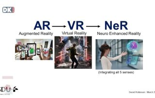

Kunstig intelligens i kunsten
Afsnit 1 – 18 min
Hvad er egentligt AI? Hvordan funger det og hvad kan man bruge det til? Få legende introduktion til emnet. Her taler vi med psykolog Mads Korsgaard og den digitale kunstner Andreas Refsgaard som stiller skarpt på, hvad kunstig intelligens kan!

Kunstig intelligens i kunsten
Afsnit 2 – 18 min
Jørgen Mads Clausen, tidligere CEO & Chairman Emeritus fra Danfoss, der fortaler om plan for et nyt forskningscenter ved Syddansk Universitet i Sønderborg .Peter Enger fra Syddansk Universitet fortaler om Den Digitale Treenighed. Se med og få dybere indsigt i nytænkning for Bright Digital Future.

Metaverse
Afsnit 4 – 18 min
Metaverse, Bliver introduceret af associeret professor Svend Hollensen, Syddansk Universitet – Business School. Metaverse indgår som en del af Den Digitale Treenighed, der omfatter digital ledelse & forretningsudvikling, digital engineering samt informationsteknologi.

Digitalisering og menneskelig værdighed
Afsnit 5 – 18 min
Michael Böss, Dr.phil, historiker og forfatter til “Mennesket i den digitale verden” – muligheder og problemer – digitaliseringens påvirkning af vores syn på os selv og andre – og er der plads til ”ånd” og ”sjæl” i en digitaliseret virkelighed?

Robotternes fremdrift
Afsnit 6 – 18 min
CEO Mikkel Christoffersen giver en forklaring om den danske robotteknologis globale styrkepositioner samt dens vigtige rolle i den grønne omstilling og cirkulære økonomi.
Konference Bright Digital Future

Digitalisering sker overalt – bølgen skyller ind over samfundet. Er Europa, Danmark, virksomhederne, borgerne – det enkelte menneske – klar til den digitale tidsalder? Bliv klogere på fremtiden